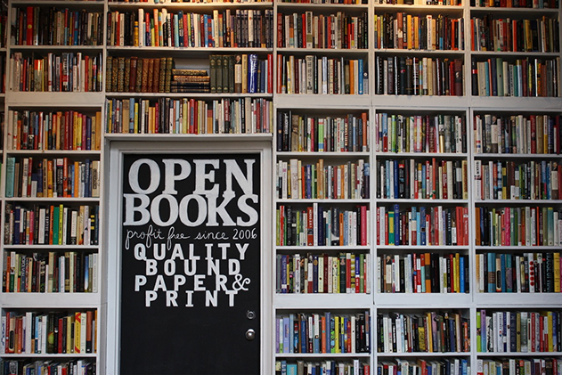
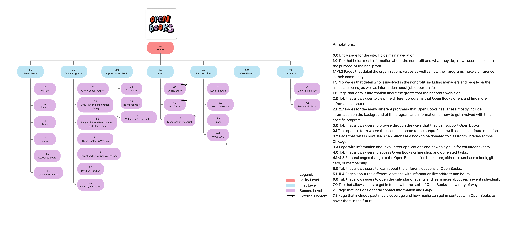

Open Books Project
| Role | Timeline | Focus |
|---|---|---|
| Researcher | Jan - Mar 2026 | Navigation, IA Research |

TL;DR
The problem
Open Book’s navigation was inconsistent, redundant, and poorly labelled, making it difficult for users to effectively use the site.
What I did
Performed a content inventory, created a new organizational framework and tested it using card sorting and tree testing.
The outcome
A new sitemap with more clarity, helping users more easily navigate the site and engage with their content.
Overview
This was a quarter-long project completed in a group of three for a Content Strategy and Information Architecture class during my master’s program. The aim of the project was to choose a website and restructure its navigation based on research conducted throughout the course of the class. We restructured the website Open Books, a Chicago based nonprofit that works to promote literacy through their programs. We chose this website because the information architecture left something to be desired and we thought we could improve upon it.
Methods
Our methods for this project included:
- Content inventory
- 2 rounds of card sorting
- 2 rounds of tree testing
All of these research activities were not conducted on actual users, but peers recruited by the team.
My Role
As part of a 3 person team, I was specifically responsible for:
- Managing the content inventory
- Deciding what cards to include
- Running tree tests
- Making the final sitemap
- Contributing to the final presentation
Project Deliverables
Through our research, we found that the way the website was organized had a lot of redundancies and content in places that one wouldn’t expect it to be. We reorganized the content into a different organizational framework and ran that framework through several rounds of card sorting and tree testing, changing the framework and sitemap as the results indicated were necessary. In the end, we had a proposed sitemap for the new organization of the website which would make it much easier for users to achieve tasks like donating and volunteering when they used the site.
Final Sitemap

Final Presentation
For more insight into this project, you can take a look at the final presentation here.
Lessons Learned
In the course of this project, I learned how to conduct user experience specific methodology like card sorts and tree tests. I also learned how to iterate through different rounds of these methodologies and change them based on the previous results to end up with something that was truly more efficient than the original product. If I had more time on this project, I would test the entire sitemap with some first click testing or task based usability testing to make sure that the new site structure made sense and then contact the organization with the proposed sitemap.